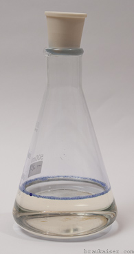
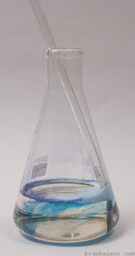
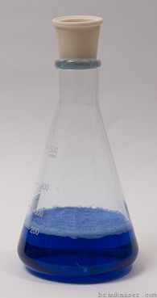
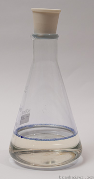
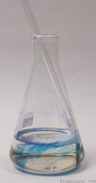
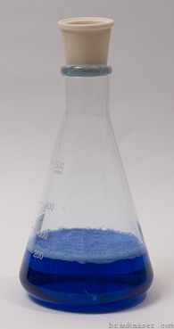

Microscope use in brewing
{kind=link}
For many home brewers the ultimate brewing gadget is a microscope. What could be more more geeky than actually looking at the organisms that make our beer. This article gives interested home brewers guidance on buying a microscope and necessary accessories. It also shows how to make effective use of a microscope.
What to expect from using a microscope
Before we get started, here are some points about what to expect and what not to expect from using a microscope.
The primary use of a microscope in the brewery will be for counting yeast cells using a hemocytometer. Cell counts are useful for determining pitching rate, remaining cell density when bottling beer and determining yeast densities in yeast sediment. The latter is useful for establishing a correlation between slurry weight and yeast count to allow more precise pitching without having to perform lengthy counts.
Yeast counting takes time and easily adds 20-30 min to your brew day. Especially if you want to determine the amount of available yeast before pitching. This is why pitching yeast by weight is more practical if the yeast density can be predicted fairly accurately.
With a simple staining technique (methylene Blue) you'll be able to asses the health of a yeast culture.
A microscope also allows you to better classify the source of haze. In particular it allows you to determine if a haze is caused by yeast cells or much smaller protein globules.
With a microscope you will not be able to reliably detect a infection before it is noticeable in the beer. This is because the bacteria concentration necessary for flavor impact is very low and only by chance you'll be able to see a bacterium in a yeast or beer sample. The use of agar with selective growth media is better suited for this task.
Purchasing a Microscope
{kind=link}
The hardest part of getting a microscope is deciding what to get. Prices range from under $20 for kids toys all the way to lab grade equipment in the thousands and tens of thousands dollar range.
For brewing use we are looking for a compound (multiple lenses) light microscope with these features:
- magnification: 400x is needed for cell counting and 100x is useful to look at a larger grid in the hemocytometer. For microscopes the magnification is calculated by multiplying the objective power (e.g. 40x) with the eyepiece magnification (e.g. 10x). In the given example the total magnification would be 400x. At 400x the image should be crisp and clear. Many microscopes also offer 1000x magnification (100x objective and 10x eyepiece) , oftentimes with the use of special microscope oil. In lower priced models this magnification may not be of much use due to low image quality (empty magnification). However, for most brewing applications more than 400x is not needed.
- coarse and fine focusing: At 400x, focusing adjustments that need to be made are tiny and fine focusing will give you much better control and less chance of breaking through the hemocytometer's cover slip
- Sturdy and level stage: some cheaper microscopes have slanted stages. You want a level and sturdy stage to hold the hemocytometer. A microscope with a mechanical stage will most likely be constructed like this
- mechanical stage: the hemocytometer needs have to be moved to be moved with a precision of a few micro meters. This requires a mechanical stage that can be moved in X and Y direction using wheels or knobs. Simple clamps, that hold down the slides on cheap educational microscopes and would require the hemocytometer to be moved by hand, will not do.
- Abe condenser with iris diaphragm: The diaphragm will be used in an almost closed setting to enhance contrast of the image
- cordless vs. corded: most likely your microscope will get an assigned spot in your fermentation area and being cordless will not make a difference.
- Monocular vs. binocular: A binocular option is nice, especially if you plan to look through the microscope a lot. However, it also adds about $100 to the price of the microscope. If you plan to attach a camera to the microscope to view the images directly on the computer you may not have a need for a stereo (binocular) version. Trinocular versions, binocular with extra port for a camera, are also available, but are even more expensive.
Additional equipment

A microscope is not the only equipment needed for brewing use. The following is a shopping list of additional items
- hemocytometer: initially designed to count blood cells, hence its name, the hemocytometer is the primary tool used for cell counts. It is a precision instrument where a counting grid of known dimensions is etched into a piece of glass. They are available with dark or bright lines. Brightlined hemocytometers have a transparent metal coating into which bright lines were etched. Darklined hemocytometers don't have that metal coating and have the grid etched into the glass. They seem to be equally well suited for counting yeast cells. The counting area is covered with a thin cover slip that is supported at a known distance above that counting grid. When filled, the sample containing the cells is sucked into the gap between the grid and cover slip by capillary action. After the cells have settled on the grid they can be viewed and counted under the microscope. They cost between $20 and $50 with the Improved Neubauer style of counting grid appearing to be the most common. More about their use later
- pipettes: counting cells, especially in starters and slurries, oftentimes requires precise dilution of samples. This is best done using graduated glass pipettes. I suggest getting serological pipettes since their graduation shows the amount that will be dispensed when the pipette is completely emptied. They cost about $2-3 a piece and the most useful sizes will be 1, 2, 5 and 10 ml.
- Pipette pump: this is needed to precisely fill the pipettes. The hand operated mechanical versions cost about $10 and a single one designed for 10 ml will also work for 1, 2 and 5 ml pipettes.
- Methylene blue stain: this simple stain will allow you to asses yeast health. It is sold as powder or 1% aqueous solution. Either one will work and it stores well in either form. Besides laboratory supply vendors it is also available from aquarium supply stores.
- Small dropper bottle: this is for the 1% methylene blue solution unless it already comes in a bottle with a dropper.
- Tally counter: This makes counting cells much easier. It can be a mechanical unit or simply a smart phone app. Check your app store.
I buy my lab supplies at cynmar.com but there are many other places on the web that sell this equipment.
Using the microscope
preparing the sample
Since cells are counted only in a very small sample, the sample needs to be representative of the beer or liquid that contains the yeast population. That means that the whole volume needs to be mixed very well and yeast cells cannot be allowed to flocculate. This aspect is very important.
There are two approaches to determining pitching rate, i.e. initial cell density in the beer. Cells can be counted once they have been pitched into the beer and cells can be counted while they are suspended in the propagation vessel. The former has the advantage that it does not require dilution. But if more cells than desired have been pitched they cannot be removed. The later requires dilution of the sample. If the amount of wort added to the yeast is about 5% of the wort volume to be pitched (1 qt for 5 gal batches or 1 l for 20 l batches) a 1:20 dilution is recommended.
For that add 19 ml water to a test tube or other small vessel and then add 1 ml of the stirred yeast culture. Mix well. Don't shake it vigorously. Some yeast strains, in particular ale yeast, like to aggregate in the foam. Repeatedly pull a sample into the pipette and push it back out to flush the pipette.
un-flocculating yeast
Poor flocculators like dusty lager yeast and German ale yeasts are easy to deal with. Most other flocculating yest strains will need some help. Here are some practical ways of un-flocculating yest for cell counting [1]
fresh wort
Maltose inhibits flocculation, which is why yeast un-flocculates in fresh wort. This is also true for heavy flocculators like English Ale yeast (WLP 002). Simply add fresh wort to the yeast sediment and place it on the stir plate for a few minutes. This is a very practical way of determining the yeast count in yeast sediment before pitching since the health of the yeast is not affected and un-flocculating the yeast also allows for a more even distribution when the yeast is pitched.
sulfuric acid
When the yeast sample to be counted is not intended for pitching, the yeast can be un-floculated with the addition of some sulfuric acid (H2SO4). This does not affect the yeast viability which is important if methylene blue will be used for viability assessment. However, sulfuric acid is highly corrosive and has to be handled with care
disodium EDTA
Safer than sulfuric acid is the use of EDTA. EDTA (Ethylenediaminetetraacetic acid) is a chelating agent that chelates (“captures”) the calcium ions needed for flocculation. As a result the yeast sample un-flocculates. It does not affect the yeast health and methylene blue staining can be used to asses yeast viability.
PBW
Five Star's Powdered Brewery Wash also contains chealating agents and is able to prevent yeast from flocculating. While it is safe to handle and readily available for many brewers it does affect the yeast health and methylene blue staining cannot be used to asses the viability of the culture.
preparing the hemocytometer
{kind=link}
Prepare the hemocytometer according to the manufacturers instructions. In most cases this simply means placing the cover slip over the counting grid(s), supported by two ridges.
Now pull a sample with the pipette and create a small drop on the pipette's tip. Place that drop right next to the edge of the cover slip such that it will be sucked into the counting chamber by capillary action. If your hemocytometer has two counting grids, pull another sample and repeat the procedure for the other counting grid. The sample should cover the counting grid while avoiding overflow into the “moat” or overflow area. Too much liquid in the moat may push the cover slip upward and change the volume above the counting grid.
Now place he hemocytometer onto the microscope’s stage and select the weakest magnification. Using the focusing knob move the stage closest to the objective and while looking through the eyepiece move the stage away from the objective until the counting grid can be seen. Focus and change to the next higher magnification level. Re-focus and adjust the stage's position such that the center counting grid is visible. Note how evenly the cells are distributed. If they are clumped together, the sample may need to be re-mixed or the yeast needs more time to un-flocculate.
Unless the focus needed to change, it can be left as is and the next time you count cells you don't have to go through the outlined focusing procedure.
counting

Change to 400x magnification. This is the best magnification for counting yeast cells. By convention the cells in the 4 corner 4x4 grids and in the center 4x4 grid are generally counted (see Figure 13 for the complete Neubauer counting grid). If the yeast density is low, additional grids may need to be included. See figure 4 on how to count cells in one of the 4x4 grids.
When using a hemocytometer with a depth of 0.1 mm (most common) the cell density of the original sample in Million cells per ml (or Billon cells per liter) is

Dilution factor is the number of sample volumes of water used for dilution plus one. Examples:
- No dilution: dilution factor is 1
- 1 ml sample + 1 ml water: dilution factor is 2
- 2 ml sample + 10 ml water: dilution factor is 6
The formula also means that counting one row of 4 small squares in an undiluted sample gives a very rough estimate of the cell density.
The number of cells in the culture in Billion can be calculated by multiplying the cell density with the culture or beer volume in liter ( 1 Million/ml = 1 Billion/l). Note that this is the volume in which the yeast population is currently suspended.
Cell counts determined with a hemocytometer have accuracy limits that every brewer should understand. The error can be minimized by
- Making sure the sample taken is representative of the culture or beer. This means thorough mixing.
- When diluting the sample the same it needs to be mixed thoroughly and the pipette needs to be rinsed with the diluted sample.
- Counting a sufficient number of cells. At least 100 cells should be counted since the statistical error is inversely proportional to the square root of the number cells counted as shown below.
The following formula can be used to estimate the statistical error based on the number of cells that were counted[2]:
{kind=link}
Ideally multiple samples should be taken and counted separately. If that is not done the two counting chambers should at least be filled with separate pipette loads.
Methylene blue staining
Methylene blue staining allows for a simple way to asses the health of a yeast culture. In theory dead cells will stain blue while living cells remain colorless. In practice it has the tendency to overestimate the viability. Despite its shortcomings, however, methylene blue staining is a quasi standard in the brewing brewing industry for viability testing due to its simplicity and quick results. It is also a convenient test for home brewers since methylene blue is readily available on the internet and has a long shelf life.
In its oxidized form, methylene blue is blue. In its reduced form, called leucomethylene blue, it is color less[3]. This can be demonstrated in the “blue bottle experiment” where methylene blue looses its color due to the oxidation of glucose and reduction of methylene blue. When oxygen is added by shaking, leucomethylene blue is oxidised back to methylene blue and the blue color reappears.
    250g water, 4 g sodium hydroxide and 5 g glucose (corn sugar) are mixed in a flask or glass bottle. 3-5 drops of 1% methylene blue are added and the solution turns a dark blue since methylene blue is stored in its oxidized blue form. In a high pH environment glucose oxidizes to gluconic acid [4]. This consumption of oxygen reduces methylene blue to its colorless leuco form. The reaction takes a few minutes and a blue layer may remain at the surface where oxygen from the air is available. When oxygen is added through an oxygen wand, for example, leycomethylene blue can oxidize back to methylene blue. This can be seen as the blue streaks in the image. After the bottle has been shaken vigorously much more oxygen is dissolved in the water and the solution turns a dark blue again. Upon standing it will once again lose its color.
   250g water, 4 g sodium hydroxide and 5 g glucose (corn sugar) are mixed in a flask or glass bottle. 3-5 drops of 1% methylene blue are added and the solution turns a dark blue since methylene blue is stored in its oxidized blue form. In a high pH environment glucose oxidizes to gluconic acid [4]. This consumption of oxygen reduces methylene blue to its colorless leuco form. The reaction takes a few minutes and a blue layer may remain at the surface where oxygen from the air is available. When oxygen is added through an oxygen wand, for example, leycomethylene blue can oxidize back to methylene blue. This can be seen as the blue streaks in the image. After the bottle has been shaken vigorously much more oxygen is dissolved in the water and the solution turns a dark blue again. Upon standing it will once again lose its color.
When methylene blue enters living cells, the cell's respiration (consumption of oxygen) quickly reduces it to its colorless leuco form. This is why living cells don't stain. In dead cells methylene blue can accumulate in its oxidized (blue) form. But what if methylene blue cannot enter dead cells. When cells age they deposit lipids and sugars into their cell walls as a protection from the environment. This prevents methylene blue from entering and when the cells later die they will not stain blue [5]. If a fresh yeast culture is heat pasteurized to kill all yeast cells, all cells will stain with methylene blue (Figure 5). If on the other hand an old and dead yeast culture is stained not all cells will turn a dark blue (Figure 6). This is why methylene blue staining overestimates the viability of a culture compared to plate counts where cell viability is tested by counting the cells that are able to grow and form colonies.
Because of methylene blue's overestimation of viability, results less than 85-90% should be seen as inaccurate when using this stain[6] . For practical brewing purposes if a yeast culture is showing a viability of less than 90%, when tested with Methylene blue, it should not be used and a new culture should be grown. That can be done by propagating a small sample of the old yeast.
To perform a viability test with methylene blue brewers should follow this protocol:
- prepare a 1% w/w solution of methylene blue and keep it in a dropper bottle. This will be the stock solution
- Dilute a yeast sample as necessary
- add 1 drop for every 5 ml of diluted yeast sample. The drop adds a volume of 0.05 – 0.07 ml and decreases the cell count by ~1%, which is clearly in the noise of cell counts and therefore can safely be ignored.
- Let the stained sample stand for 1 minute
- remix the sample and pipet a sample into the hemocytometer and view at 400x under the microscope
In order to correctly see which cells are stained focus may have to be shifted slightly up or down. Count colorless and light blue/greenish cells as viable and count dark blue cells as dead. Don't count blue stained cell buds if the mother cells did not stain. Buds are busy with growing metabolism and may not reduce the dye. [7]
The viability as Methylene blue of the yeast culture can be calculated as:
{kind=link}
{kind=link}


cell counts using ImageJ
Cell counts at the microscope take a lot of time and are rather tiring. An alternative is to take picture(s) and count the cells using desktop counting software like ImageJ. Pictures can be taken with a dedicated camera mounted to the microscope or even a cell phone camera that is held close to the eyepiece. The latter will require some practice but works sufficiently well. When taking pictures for cell counting it is also possible to take them at reduced magnification (100x) and thus wider field of view. In this case the only one image has to be taken for each side of the hemocytomer.
ImageJ has both automated and manual counting modes. For the automated cell counting, which is based on particle recognition in the image one needs a fairly evenly lit and high quality image which I'm not able to take with a cell phone. Because of that I'm using the cell counter under Plugins->Analyze->Cell Counter. After initializing the image a cell type is chosen and every click on the image leaves a marker and increments the counter for that cell type. Different cell types can be used for different grids or counting stained and unstained cells.

other uses
assessing yeast health
healthy yeast cells are plump and round while starved yeast cells have a more elongated football like shape. See Figure 6 for such an old yeast culture
ale vs. lager yeast

In general you will not be able to differentiate between different strains of yeast, though some strains have larger cells than others. But there is one difference between ale and lager yeast that can sometimes be observed. Ale yeasts tend to stick together after budding and end up forming small stringed colonies consisting of 5-10 cells (see Figure 9). These colonies are more likely to attach to CO2 bubbles and rise into the kraeusen. Lager yeasts separate after budding and only form groups when they flocculate. These groups are clumps rather than chains if cells.
determining the source of beer haze
When a beer exhibits a haze it makes sense to take a look at the beer under the microscope. The procedure is the same as for cell counts with the exception that the hemocytometer should be cleaned more thoroughly than usual in order to avoid particles that are not coming from the beer. I also suggest filling one of the sides with water so you can compare the beer to water.
Unless it is a strong haze, particles will be rather far apart. But you'll be able to see if the haze is the result of yeast or protein complexes. Protein complexes are much smaller than yeast (~0.5 um compared yeast which is 10 times as large). If the haze is the result of a microbial infection it should be noticeable in the beer's taste. Bacteria is much smaller than yeast and usually shaped like rods. Don't confuse rod shaped crystal's (possibly calcium oxalate monohydrate) with bacteria, though. These rods, which can sometimes be found in the sediment, are about as large as yeast cells (see Figure 11).
Yeast hazes will eventually settle. Protein based hazes are much more stubborn and take many month to settle or require treatment with a fining agent like gelatin.
Appendix
Gallery of various microscopy images
{kind=link}
Improved Neubauer counting grid

Further reading
- celeromics.com - Cell Counting with Neubauer Chamber - Basic Hemocytometer use
- White Labs - Cell Counting/Viability Testing
- White Labs - Cell Counting and Viability presentation
- American Brewers Guild - Using a Hemacytometer
References
- ↑ Yeast un-flocculation for cell counting
- ↑ Celeromics, cell counting error
- ↑ Wikipedia - Methylene blue
- ↑ Caltech, Blue-Bottle.pdf
- ↑ Yahoo! Voices - The Methylene Blue Staining Procedure and Yeast Viability
- ↑ C. Boulton, D. Quain, Brewing Yeast and Fermentation, Blackwell Science Ltd, 2001
- ↑ White Labs, Cell Counting and Viability